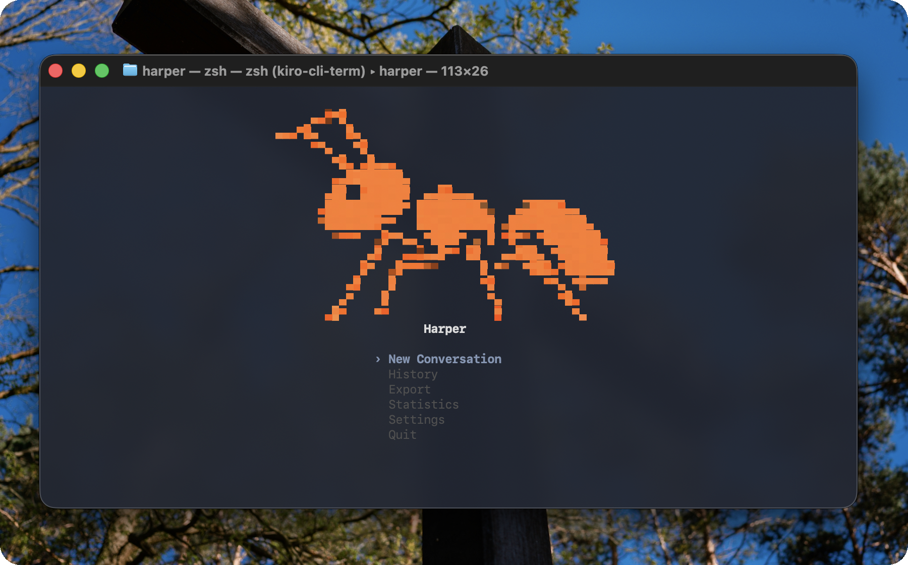

Terminal workflows without ceremony.
Harper translates natural language into safe shell commands, prompts for approval before execution, and keeps an audit trail for every session. Swap between OpenAI, Gemini, SambaNova, or run fully offline via Ollama.

Deterministic command flow
Natural-language requests resolve into explicit shell commands with previews and approvals.
Provider flexibility
Switch providers by editing `config/local.toml` or environment variables—no UI changes required.
Session memory
Conversations, tool calls, and outputs persist locally for later replay and compliance.
Minimal surfaces
Both the TUI and docs focus on command loops—no gradients, mascots, or confetti.